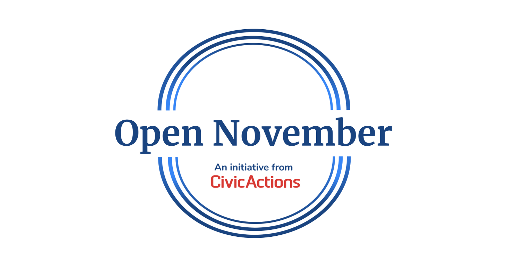
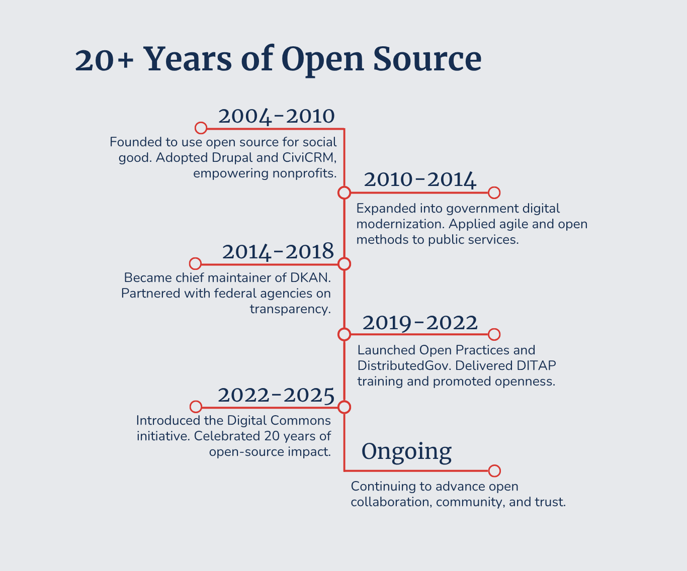

This Open November, CivicActions is proud to reflect on more than two decades of advancing openness in government, technology, and collaboration. Since our founding in 2004, we’ve worked alongside public servants, technologists, and changemakers to make digital services more transparent and accessible. Our journey has always centered on one idea: that openness builds trust and empowers communities.
Explore the timeline below to see how CivicActions has evolved, partnered, and contributed to the open movement from 2004 through today.

2004–2010 | Foundational Commitment
- Founded in 2004 by Henry Poole and Aaron Pava to use free and open source software (FOSS) for social good.
- Focused on empowering nonprofits and NGOs through open tools and technologies.
- Adopted Drupal (2004) and CiviCRM (2005) as core platforms.
- Built early hosting and development infrastructure using open systems (LAMP and Openwall Linux).
- Free Software Foundation publishes the GNU Affero General Public License, Version 3 (AGPLv3) which becomes the standard network-enforcing copyleft license.
- Organized the first DrupalCamp in 2006 and contributed to Drupal core and modules.
- Served nearly 200 nonprofit clients, including Amnesty International, ACLU, Creative Commons, Free Software Foundation, and American Public Media.
- Established a consistent practice of open-sourcing all client-funded code contributions back to the community where possible, cementing the “Default to Open” principle.
2010–2014 | Broadening Mission and Agile Leadership
- Expanded from nonprofit work into public-sector modernization.
- Openly published an Estimating Spreadsheet for pricing website development projects
- Applied open source and agile methods to improve government technology.
- Co-founded Agile Government Leadership (AGL) in 2014 to promote agile and open practices in government.
- Contributed foundational concepts to the 18F Guides and U.S. Digital Service playbook, particularly around open-source tooling, agile procurement, and user-centered design.
- Published the Agile Government Handbook under an open license for public reuse.
2014–2018 | Open Data and Government Partnerships
- Became chief maintainer of DKAN, the open source data catalog and publishing platform.
- Openly published process, materials, and proposal to qualify for the State of California’s Agile Development Pre-Qualified (ADPQ) Vendor Pool
- Supported agencies such as the Centers for Medicare & Medicaid Services (CMS) and the General Services Administration (GSA) with open-data initiatives.
- Partnered with federal agencies including the Department of Education, FCC, DOJ, and Treasury on open-source digital modernization projects.
- Hosted the first multi-agency Open Data Summit in Washington, D.C., convening government data stewards and the open-source data community to align on best practices.
- Continued sponsorship and contribution to Drupal and related communities.
- Launched Agile Government Leadership (AGL) as a non-profit association to serve the public sector and accelerate the transformation and modernization of government.
2019–2022 | Open Practices and Public Advocacy
- Developed and published internal open practices for delivery, collaboration, and transparency.
- Advocated the “Default to Open (Data/Code)” policy, encouraging open access to government software and data.
- Published the DistributedGov initiative in 2020 to help government teams quickly shift to effective remote work, particularly in response to the COVID-19 pandemic.
- Became the first small business authorized to deliver the Digital IT Acquisition Professional (DITAP) training.
- CivicActions was featured in A Radical Enterprise (2022) for pioneering use of self-management and transparent practices.

2023–2025 | Digital Commons and Open Collaboration
- Launched the Digital Commons initiative to formally consolidate all open-source tooling, public repositories, and shared government playbooks under a single framework for community reuse.
- Over 25 CivicActions team members maintain more than 70 Drupal modules.
- Created and released the Open Requirements Library for reusable government procurement requirements.
- Expanded the Open Practices repository with templates, playbooks, and open-source procurement tools.
- Launched an Open Python Library for compliance, accessibility, and automation.
- Published the Partner Playbook to support transparent teaming and collaboration.
- Continued leadership of DKAN and open-data platforms for federal agencies.
- DKAN certified as Digital Public Good with the DPG Alliance.
- Marked 20 years of open-source impact in 2024 with renewed focus on open standards, reusable tools, and shared learning.
Open November is a month-long initiative led by CivicActions and open to the broader digital services community. The goal is to strengthen our collective commitment to open source, transparency, and shared knowledge through meaningful contributions to the Digital Commons. Throughout November, individuals and teams across digital government, civic tech, and open source communities are invited to contribute tools, documentation, templates, and practices that advance open collaboration. Each contribution helps grow the shared library of resources that supports better, more equitable digital services.
Learn more about our Open Practices and Open November.